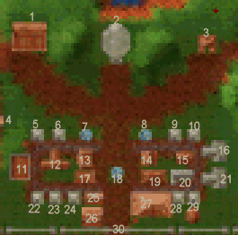

| 1 | Initiate Guild of Self Expert Learning Training (use back of building to get onto top floor) |
| 2 | New Sorpigal Temple |
| 3 | Initiate Guild of Elements |
| 4 | Bridge to Abandoned Temple |
| 5 | Expert: Earth Magic Training |
| 6 | Expert: Fire Magic Training |
| 7 | +5 spell points fountain (25 charges a day) |
| 8 | +10 Might temporarily (5 charges a day?) |
| 9 | Elemental Guild Membership, Quest to get spider queen heart |
| 10 | Guild of Self Membership Quest to find Angela from Abandoned Temple |
| 11 | Training Grounds |
| 12 | Buccaneers' Lair (trains in Merchant, Indentify, Perception and Disarm. Note that if you fly on the north ledge of the building and face south, you will be teleported to the Shrine of Gods if you press SPACE bar and search.) |
| 13 | Town Hall |
| 14 | The Common Defense |
| 15 | Blades' End |
| 16 | Expert Meditation Training |
| 17 | Savings House with Expert of Air on top. Note that on the South side of the house you can find a Fly Scroll. |
| 18 | +5 hit points fountain (30 charges a day) |
| 19 | The Knife Shoppe |
| 20 | The Seeing Eye |
| 21 | Expert Body Building Training |
| 22 | Expert Spirit Magic Training |
| 23 | Expert Mind Magic Training |
| 24 | Expert Body Magic |
| 25 | Traveler's Supply |
| 26 | Stables: Coach Company |
| 27 | A Lonely Knight |
| 28 | Buccaneers' Lair Membership, buys Cobra Eggs for 300 gold |
| 29 | Blade's End Membership |
| 30 | Main Gate to New Sorpigal, leads to Ironfist Castle (W), Goblinwatch (SW), Boat (E) |
Leave us a message at: mgrounds@hotmail.com